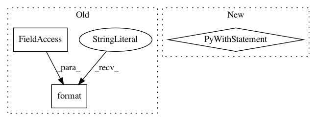

85caab8f4ee7888f8649af662166a6dd3f784e5a,t3f/neural.py,KerasDense,build,#KerasDense#,46
Before Change
self.W = t3f.get_variable(name, initializer=initializer)
self.b = None
if self.use_bias:
b_name = "tt_dense_b_{}".format(KerasDense.counter)
b_init = tf.constant_initializer(self.bias_initializer)
self.b = tf.get_variable(b_name, shape=self.output_dim,
initializer=b_init)
KerasDense.counter += 1
After Change
""he", and "lecun" are supported"
% self.kernel_initializer)
name = "tt_dense_{}".format(self.counter)
with tf.variable_scope(name):
self.matrix = t3f.get_variable("matrix", initializer=initializer)
self.b = None
if self.use_bias:
b_init = tf.constant_initializer(self.bias_initializer)
self.b = tf.get_variable("bias", shape=self.output_dim,
initializer=b_init)
self.trainable_weights = list(self.matrix.tt_cores)
if self.b is not None:
self.trainable_weights.append(self.b)
In pattern: SUPERPATTERN
Frequency: 4
Non-data size: 3
Instances
Project Name: Bihaqo/t3f
Commit Name: 85caab8f4ee7888f8649af662166a6dd3f784e5a
Time: 2018-12-29
Author: sasha.v.novikov@gmail.com
File Name: t3f/neural.py
Class Name: KerasDense
Method Name: build
Project Name: kevinzakka/recurrent-visual-attention
Commit Name: fd723d719ddb49b66a5084215343de763a40083d
Time: 2018-01-23
Author: kevinarmandzakka@gmail.com
File Name: trainer.py
Class Name: Trainer
Method Name: train_one_epoch
Project Name: KrishnaswamyLab/PHATE
Commit Name: dc3beb6aa73c999ed18a791c0ca85b552d0b1cb6
Time: 2019-10-13
Author: scottgigante@gmail.com
File Name: Python/phate/phate.py
Class Name: PHATE
Method Name: transform
Project Name: tkipf/gcn
Commit Name: 50de2c62978bd5d8ec4458fdcb7383ada69ac2d8
Time: 2017-02-08
Author: thomas.kipf@gmail.com
File Name: gcn/utils.py
Class Name:
Method Name: load_data